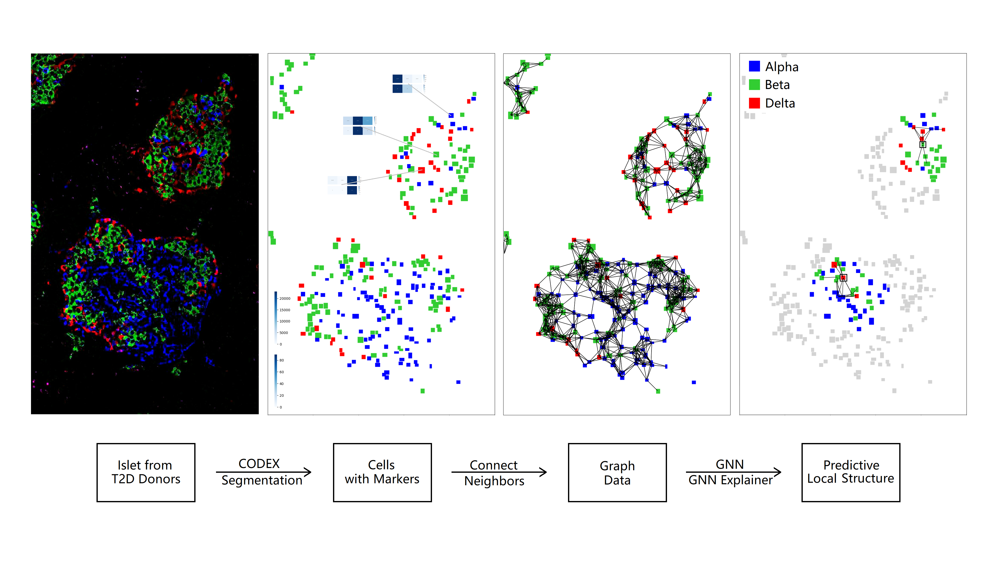
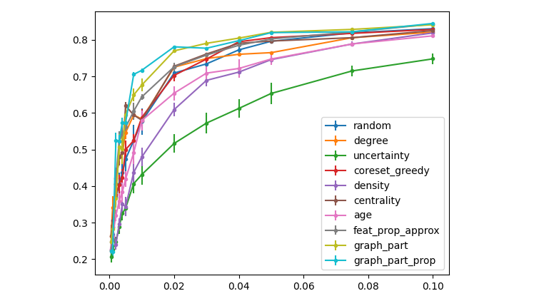
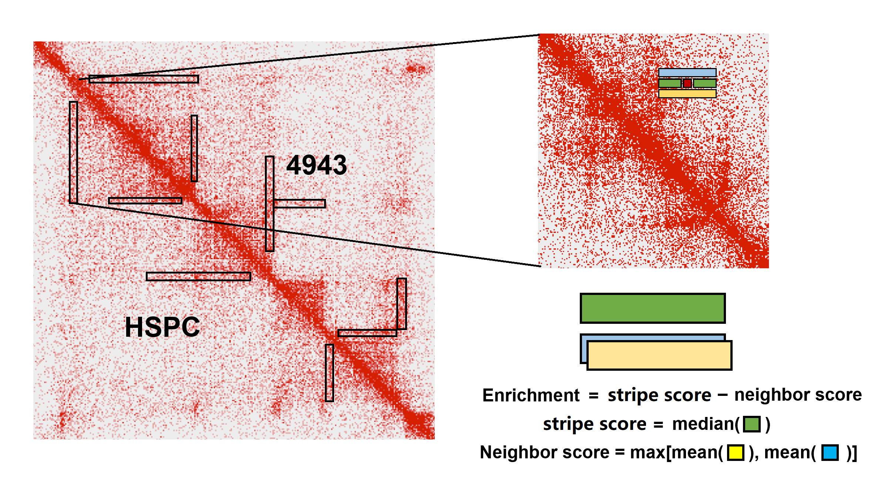

Here is a virtual but warm greeting from Ziqiao, as you just came across his page!
Well, many of my non-Chinese friends found it hard to pronounce my Chinese name,
so...it's absolutely fine to just call me Martin alternatively.
I am a Senior student at University of Michigan in
Computer Science
,
with a dual degree of
Electrical and Computer Engineering
at Shanghai Jiao Tong University.
I have a passionate interest in machine learning, especially graph representation learning.
At the moment, I am excited about Graph Neural Network, its interpretability and robustness.
I am also actively exploring how state-of-the-art machine learning breakthroughs
can play a role in traditional natural language processing and bio-informatics problems.
Experience
Education
-
University of Michigan, Ann Arbor
B.S. in Computer Science || GPA: 4.00/4.00 || Sept. 2019 - Present
- Machine Learning (A+)
- Artificial Intelligence (A)
- Numerical Analysis (A+)
- Natural Language Processing (in progress)
- Deep Learning (in progress)
- Computer Vision (in progress)
-
Shanghai Jiao Tong University
B.S. in Electrical and Computer Engineering || GPA: 3.81/4.00 || Sept. 2017 - Present
- Programming and Data Structure (A)
- Logic Design (A)
- Analog Circuits (A-)
- Discrete Mathematics (A)
- Honors Mathematics II-IV (A-, A, A-)
-
Technische Universität Berlin
Winter Program || Jan. 2019 - Feb. 2019
-
Chengdu Foreign Languages School
High School || Sept. 2011 - June 2017
Timeline
2020
May - August
📖 Teaching Assistant for Artificial Intelligence
(VE492 @ Shanghai Jiao Tong University)
- With Paul Weng
May - August
📖 Teaching Assistant for Programming and Data Structure
(VE280 @ Shanghai Jiao Tong University)
- With Paul Weng
January - Present
🔎 Research Assistant at
Liu Lab
(Medical School @ University of Michigan)
- Instructed by Jie Liu
2019
May - August
📖 Teaching Assistant for Physics Lab I
(VP141 @ Shanghai Jiao Tong University)
- With Mateusz Krzyzosiak
February - December
🔎 Research Assistant at
Acemap
(School of Electronic Information @ Shanghai Jiao Tong University)
- With Junjie Ou, instructed by Xinbing Wang
February - May
📖 Teaching Assistant for Academic Writing II
(VY200 @ Shanghai Jiao Tong University)
- With Ryan Thorpe
January - February
🏫 Winter Program @ Technischen Universitat Berlin
2018
September - December
📖 Teaching Assistant for Academic Writing I
(VY100 @ Shanghai Jiao Tong University)
- With Ryan Thorpe
September
🏆 Awarded China National Scholarship,
issued by Ministry of Education of China
2017
December - January
📖 Volunteer Teaching Junior Mathematics
@ San He Junior High School, Luxi, Yunan
June
🎓 Graduated from high school :D
- Got 685/750 in The National College Entrance Examination.
Selected Projects

GNN Prediction Interpretation: Spatial Cell Patterns of T2D Islets
[code]
- Instructed by Jie Liu and Marcela Brissova.
- Redesign the GNN Explainer to perform label-wise explanation, validate the model on T2D islet samples and extract predictive spatial patterns.

Active learning on Graph Neural Network via graph partition
[code: upon request]
- Instructed by Qiaozhu Mei.
- A practical active learning query strategy on Graph Neural Networks.
Exception Handling in Autonomous Vehicles via Human Language Communication
[code: upon request]
- Instructed by Joyce Chai.
- Develop a smart interface that takes human interaction by language instructions and handle the exceptions in autonomous vehicles.

TAD Level Architectural Feature Extraction Caller
[code]
- Instructed by Jie Liu and Xiaotian Zhang.
- Extract TAD level architectural stripes from HiC, evaluate the quality and compare between cell lines.
Blogs
Check my blog here. Let me know what you want to see!
Misc
- I was born and raised up in Chengdu, the home of pandas.
- I am proud of Chengdu Foreign Languages School, my high school, and identify myself as a CFLSer. 成外人永远不会成外人。
- My dream school during high school was The University of Hong Kong (HKU),
yet I declined the offer of BSc(QFin) in pursuit of my engineering dream.
- I love literature and drama. I am particularly interested in Shakespeare's plays, ancient Chinese drama and modern Asian literature. Here is one of my essays about Cross-dressed Heroines in Comedies.
- I enjoyed travelling and have been to 12 countries. Maybe I have been to your hometown?
- I am a super fan of Nightwish.
My favourite album is Imaginaerum.
Get In Touch
You are welcome to drop me a message :)
-
Phone
734-545-9094
-
marstin0607
-
1137610417
-
Address
1875 Lake Lila Ln.
Ann Arbor, MI 48105
United States
{kind=link}
{kind=link}
{kind=link}
{kind=link}
{kind=link}